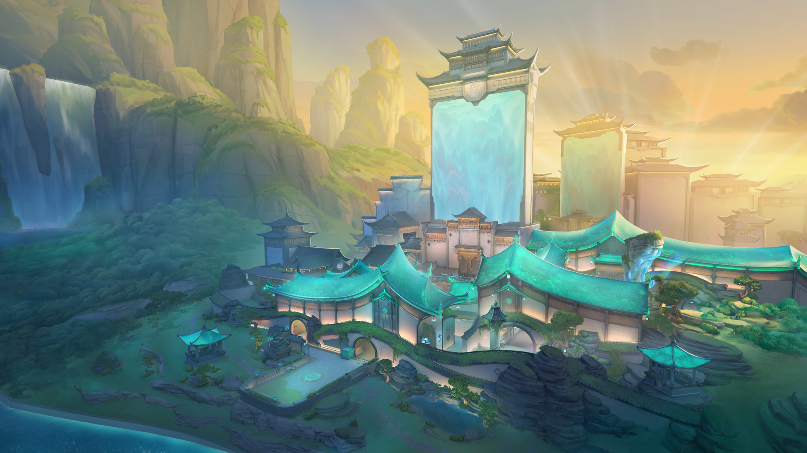
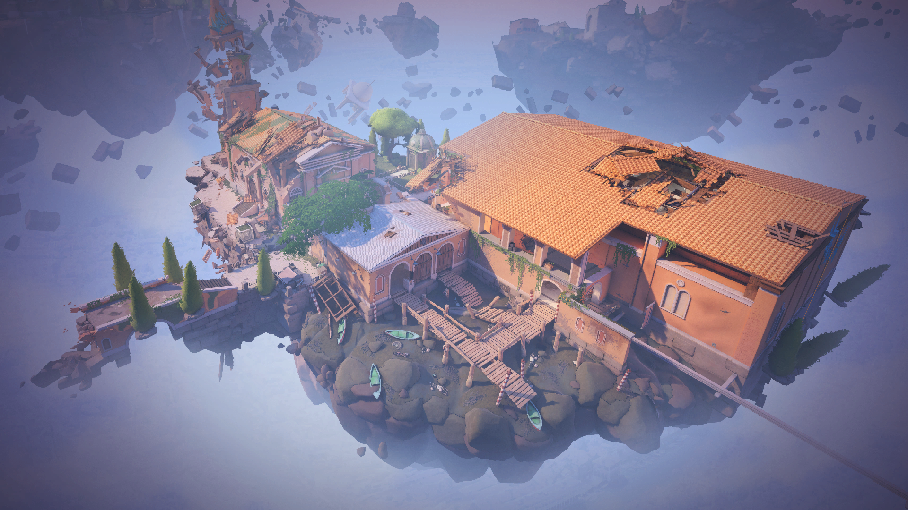

PDCA Cycleいまここが分かる図
CHECK — 分析完了88試合を合算して分析済み
弱みと強みは下の2枚にまとめました。課題は「終盤と連携」に絞っています。
PLAN — 今日の2件いまここアップ1件 ＋ 座学1件
手を動かす練習1件と、知識1件だけ。Godoさんのデータから選んだ本日の2件です。まずここから始めてください。
DO — 実行次アップ・座学 → コンペ 2試合
覚えた型と位置を、そのままコンペで試します。マップもキャラも当日のプール全体が対象です。
ACT — フィードバック試合後VODで3場面だけ確認
トレード・ローテ・スキルの残し方を確認し、結果を次の分析に戻します。
Godo At a Glance弱みと強み — 合算データから
Weak // 勝ち切る力を上げる
弱み — 個人成績が勝敗に繋がっていない
- Summit 0勝4敗。個人の数字は出ているのに勝てていません。原因は撃ち合いではなく、終盤の人数有利の落とし方と連携です。
- トレードが少ない。KAST 69.4%（メイン）。味方が倒れた直後に返せていないラウンドが残ります。
- コール中にエイムが落ちる。フルパーティで情報を出しながら撃つと精度が下がります。同時処理の型が必要です。
- ソーヴァ時は ACS が約 200 まで低下（全体は約242）。特定キャラだけの問題ではなく、スキルに意識を割いた時の共通課題です。クローヴも28試合で勝率46.4%と伸びていません。
Strong // プロに届く土台がある
強み — 数字はすでに高い水準
- 合算 ACS 約 242 ／ ADR 約 158 ／ K/D 約 1.16。ダイヤ帯で十分に戦える火力です。
- デュエリスト 7勝1敗（Abema）。エントリーで流れを作る力は実績で出ています。
- チェンバーでは K/D 1.53。置きエイムとポジションが噛み合うと一気に伸びます。
- 広いプールが使えます。ジェット／レイナ／イソ／フェニックス／クローヴ／チェンバー／サイファー／ソーヴァ／フェイド／スカイ — ロール固定ではなく、編成に合わせて動けるのが強みです。
Today Just Two今日はこの2件だけ
Warm-up // Hands-on · 20 min
本日のアップ —「声を出しながら撃つ」デスマッチ
なぜ Godo さんにこれか：フルパーティでコールを出すとエイムが落ちることが、課題としてはっきり出ています。試合前に、撃ち合いと情報出しを同時に行う型を体へ入れます。今日の練習はこの1件だけです。
- 射撃場 5分：ハードボット＋ストレイフON。完全に止まってから初弾を撃ちます。動いたままのキルは数えません。
- デスマッチ 15分：見た敵の位置・人数・使ったスキルを、実際に声に出してコールしながら撃ち合います。声が止まった瞬間が、型が崩れた瞬間です。
- 合格基準：コールしながらでもヘッドラインの高さと止まりが崩れないこと。崩れたらコールを最短形に落として、その場で立て直します。
20:00
20分固定です。音は鳴りません。
Study // Knowledge · Summit A
本日の座学 —「クロスを組む位置」サミット Aサイト
なぜ Godo さんにこれか：題材は、そのまま弱点のマップです。Summit 0勝4敗、KAST 69.4%。終盤に味方と視線が重なって同時に倒され、人数有利を落とす場面が課題です。クロスにはマップとエリアごとに正解の位置があります。今日は Summit の Aサイトで、それを1つだけ覚えます。
学ぶ内容の要点
- 進入：A Mainではヘッドラインを安定させ、Garden・Art・Caveの横の角度と、奥のHall・Linkを分けてクリアします。
- 設置前：Gardenを先に潰します。残されると設置後の死角になります。
- 設置後：サイト奥のカバー裏とLink側で視線を交差させ、トレードできる形にします。
- 壁の状態：A Wall（落とせる壁）が落ちているかでリテイク経路が変わるので、毎ラウンド確認します。
- 確認方法：カスタムで同じルートを逆向き（サイト側から）にも歩き、攻めとリテイクで見える角度の違いを比べます。
座学のテーマは日替わりで、現在のコンペプール全マップ・全エリアを順に回します。今日はサミットAサイトです。
承知しました。アップと座学が終わったらコンペへ。次のコンペでは、トレードが取れた回数と、人数有利を勝ちに変えられたラウンドを数えて並べておきます。
Next Matchコンペ → フィードバック
DO — 01コンペを2試合アップと座学を終えたら入ります。1試合目は型を試す場、2試合目は修正する場です。
CHECK — 02終盤の3ラウンドだけ見る人数有利だった場面で、挟まれていないか、トレード位置にいたかを確認します。
FEEDBACK — 03結果は次の分析へトレード率、スキルを持ったまま倒れた回数、ローテ判断の成否を次の CHECK に戻します。
次の試合で迷ったら：1人で勝とうとしない。味方のコンタクトに合わせて動く。トレードが取れる距離にいること。座学で覚えたクロスの形が、今日の型です。
本日のアップ —「声を出しながら撃つ」デスマッチ（20分）
場所 射撃場 → デスマッチボット ハード／ストレイフON（イージーは使いません）武器 ヴァンダル／ファントム目的 コールと撃ち合いの同時処理
- 射撃場 5分：カウンターストレイフで完全に止まってから初弾。動いたまま撃ったキルは数えません。ヘッドラインの高さを固定します。
- デスマッチ 15分：敵を見たら「位置・人数・スキル」を声に出してから撃ち合います。本番のコールと同じ速さ、同じ短さで言います。
- 崩れた時の直し方：声が止まった／エイムが泳いだら、コールを「Aメイン2」のような最短形に落として立て直します。長い報告は試合中の仕事ではありません。
- 合格基準：コールしながらでも、止まりとヘッドラインが崩れないこと。これが今日のアップのゴールです。他の練習は今日は足しません。
アップは毎日1件だけです。内容は本人のデータで日替わりになりますが、件数を増やすことはしません。
本日の座学の進め方 — クロスを組む位置（サミット Aサイト）
- 進入の確認：A Mainを歩き、ヘッドラインを安定させたまま、Garden・Art・Caveの横の角度と、奥のHall・Linkを分けてクリアする順番を決めます。
- 設置前の確認：Gardenを先に潰す理由を確認します。残されると設置後の死角になる位置なので、サイトに入る前に必ず処理します。
- 設置後の確認：サイト奥のカバー裏とLink側に実際に立ち、2人の視線が交差してトレードできる形になっているかを確認します。
- 壁の状態の確認：A Wall（落とせる壁）が落ちているかでリテイク経路がどう変わるかを見ます。毎ラウンド確認する習慣にします。
- 逆向きの確認：同じルートを逆向き（サイト側から）にも歩き、攻めとリテイクで見える角度の違いを比べます。比べたら終わりです。座学は1テーマだけ。次のテーマは明日、別のマップ・別のエリアになります。
座学のテーマは全マップ・全エリアを順に回します。特定のマップやエージェントに偏ることはありません。今日のテーマの情報源リンクは、座学カードに掲載した4件です。
マップは絞りません。コンペプール全体を日替わりで回し、どのマップが来ても同じ型で戦える状態を作ります。苦手マップだけを避ける練習はしません。
ROTATION Aヘイヴン ／ ロータス
3サイトのローテと、寄る速さの判断を鍛える日。情報取りとフェイク警戒が中心です。
ROTATION Bバインド ／ サンセット
テレポーターとミッド支配。エントリー連携と設置後のクロス配置を鍛えます。
ROTATION Cアビス
ミッドの撃ち合いとオフアングル。アビスは勝率50% — 感覚ほど負けていないので、終盤の守り方を固めます。
ROTATION Dコロード ／ サミット ほか
新しめのマップと Summit の検証日。Summit 0勝4敗は個人成績と勝敗のズレが一番出たマップなので、VODで終盤だけを重点的に見ます。
Abyss — 苦手意識ほど負けていません。勝率（メイン）50%。個人の数字が少し沈むのは入り口の情報不足が理由です。開幕の情報取りの型を全キャラ共通で決めておくと安定します。

Summit — 0勝4敗、でも撃ち負けていません。だからこそマクロと終盤の課題として扱います。次に来たら、人数有利ラウンドの守り方だけを意識してください。それ以外は普段通りで構いません。

その他のマップも同じ扱いです。ヘイヴン、ロータス、バインド、サンセット、コロード — どのマップでも「型は同じ、舞台が違うだけ」にします。マップごとに覚えるのは、クロス位置とローテの秒数だけです。
エージェントも絞りません。Godo さんの広いプールは強みです。1体に固定せず、ロールごとに「そのロールの仕事」を鍛える形で回します。
デュエリスト ジェット／レイナ／イソ／フェニックス
コントローラー クローヴ ほか
センチネル チェンバー／サイファー
イニシエーター ソーヴァ／フェイド／スカイ
ロール別の確認ポイント
- デュエリストの日：エントリーの質。7勝1敗の形を再現し、トレードしてもらえる入り方を味方と合わせます。
- イニシエーターの日：情報スキルのタイミングをラウンド前に決める。ソーヴァ時の ACS 低下は「スキルと撃ち合いを同時に行わない」型で解消します。ソーヴァ専用メニューではありません。
- コントローラーの日：クローヴ28試合・勝率46.4%の検証。スモークの位置ではなく、スモークの後に味方がどう動くかまでコールします。
- センチネルの日：チェンバー K/D 1.53 の置きと引きを、サイファーのエリア守備にも転用します。得意な形をロール全体へ広げる日です。
どのキャラでも共通の宿題は同じです。スキルを持ったまま倒れないこと、コールしながらでも撃ち合いの型を崩さないこと。この2つが全ロール共通のプロ基準です。
2アカウント合算（88試合） — Aquatopia#toppy 31試合 ＋ Abema#ttv 57試合
≈242
ACS（合算）／ メイン 229.8・サブ 249.3
≈158
ADR（合算）／ メイン 149.9・サブ 161.6
≈1.16
K/D（合算）／ メイン 1.17・サブ 1.16
50.0%
勝率（合算）／ メイン 45.2%・サブ 52.6%
69.4%
KAST（メイン）— トレード課題の根拠
読み方：火力の数字は揃っています。次に伸ばすのは火力ではなく、勝敗に直結する部分 — トレード、終盤の人数有利、スキルを使い切ること — です。今日のアップと座学は、その読みに基づいて選んでいます。
数字の出典：tracker.gg 公開プロフィール（V26 Act 6 コンペティティブ、2026-11-19 確認）。試合数が少ないマップの数字は傾向としてご覧ください。画像は Riot Games 公式アート（valorant-api.com 経由）です。